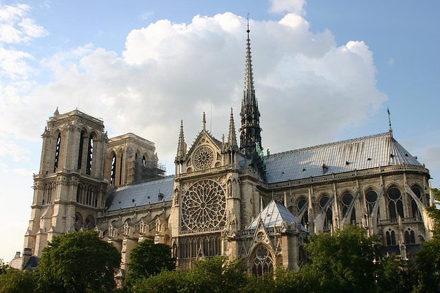

Introduction to Gothic Architecture
Gothic architecture is a style that originated in 12th-century France and spread across Europe until the 16th century. It is renowned for its height, light, and intricate decorations, primarily applied in churches, monasteries, castles, and municipal buildings. Here is a detailed introduction to Gothic architecture.Origins and Development
Gothic architecture first appeared in the Île-de-France region around the 12th century, evolving from Romanesque architecture. Unlike the heavier, more solid structures of Romanesque style, Gothic architecture introduced innovative techniques and aesthetic principles that allowed for taller, more graceful buildings.Pointed Arch
The pointed arch is one of the most distinctive features of Gothic architecture. It distributes the weight of the structure more efficiently than the rounded arch, allowing for higher and lighter buildings.Flying Buttress
The flying buttress is an external support system that transfers the weight of the roof and upper walls outward and down to the ground. This innovation enabled the construction of taller structures with thinner walls, which could then accommodate large windows.Ribbed Vault
The ribbed vault involves a framework of ribs or arches under the intersections of the vaulted sections. This method not only provided structural strength but also allowed for more complex and expansive roof designs.Stained Glass Windows
Large stained glass windows are a hallmark of Gothic cathedrals. These windows were not only decorative but also educational, depicting biblical stories and saints' lives through intricate designs and vivid colors.